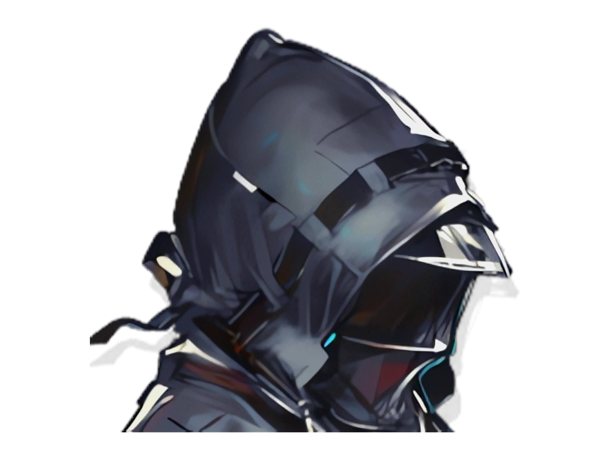

CLOSURE ROOM
FIRST PERSON
操作 / CONTROLS
W
A
S
D
移动
C
COS杜林
Shift
快走
鼠标
转头
Q
画质 高/中/低
M
静音 / 取消静音
Esc
松开鼠标
F
性能面板
信赖
0%
在宿舍里走动可以慢慢积累信赖…

📱
建议竖屏游玩
单手操作更方便
左下角摇杆移动 · 拖动屏幕转头
♪
宿舍
用第一人称走进这间工作室
四处看看
载入中…
W
A
S
D
移动
C
COS杜林
Shift
快走
鼠标
转头
Esc
退出
画面很卡？
请检查浏览器是否开启了
硬件加速
Chrome / Edge：设置 → 系统 → 「使用硬件加速(如可用)」
改完需要重启浏览器 · 可在
chrome://gpu
里确认